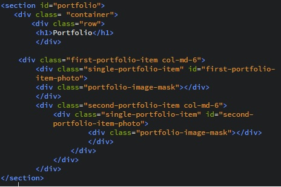

Jak uzyskać efekt maski w CSS ?
Maskowanie jest jedną z operacji powszechnie stosowaną w grafice komputerowej. Teraz postaram się Wam pokazać jak uzyskać taki efekt za pomocą HTML i CSS.
W HTML w sekcji Portfolio stworzyłam “główną” klasę o nazwie “first-portfolio-item”, w której będę zagnieżdżać kolejne klasy. Za pomocą klasy “single-portfolio-item” określam obszar w jakim będzie znajdować się zdjęcie. Nadanie id tej klasie pozwoli dodać zdjęcie oraz nadać mu odpowiednie style. Klasa “portfolio-image-mask”,pozwoli określić style maski, jaką wykorzystam
Na początku dodałam grafikę do CSS

Określam style dla obszaru strony, w jakim moje zdjęcie ma się znaleźć

Nakładam maskę na zdjęcie wykorzystując właściwości rgba oraz określam transparentność maski za pomocą opacity

Aby efekt maski był widoczny po najechaniu kursorem myszki na obrazek wykorzystałam selektor hover i jemu również nadałam właściwość opacity

Kody, które tu widzicie wykorzystałam, aby nałożyć maskę na zdjęcie drzewa.